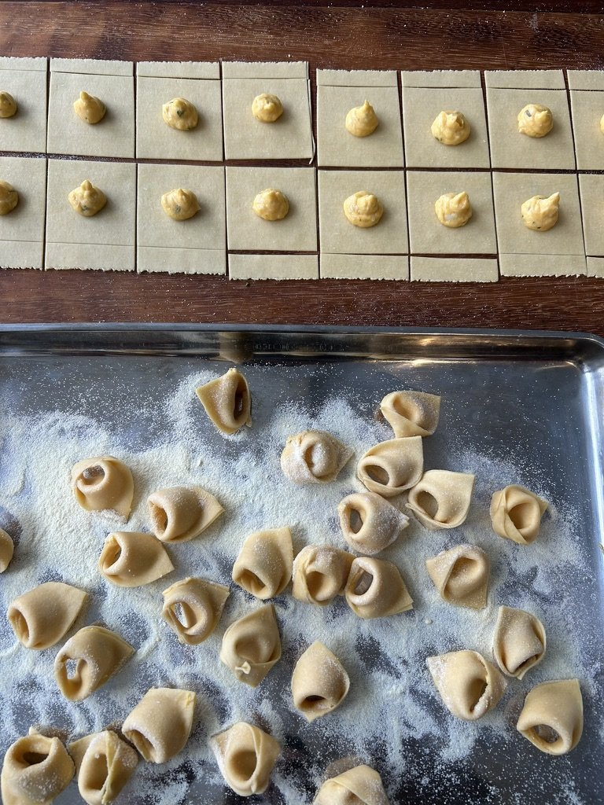

Portfolio
Tortellini met flespompoen, marjoraan en mascarpone
Vierkantjes vers pastadeeg met een toef vulling van flespompoen, mascarpone en marjoraan. Eronder de gevouwen tortellini op griesmeel, klaar voor de pan.
Het volledige recept volgt binnenkort.